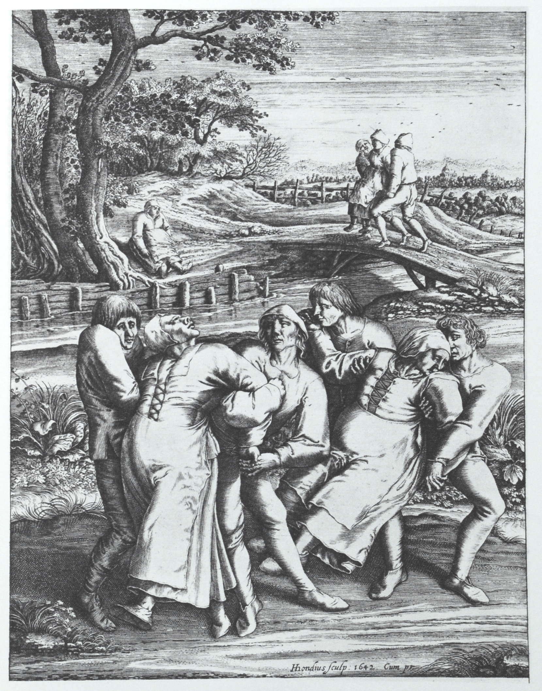

Dancing plague of 1518
The outbreak began in July 1518 when a woman named Frau Troffea began to dance fervently in a street in Strasbourg.[1] Troffea kept up the constant dancing for a week. Soon, three dozen others joined in.[4] By August, the "dancing plague" had claimed 400 victims.[4] Dancers were beginning to collapse. It is said some even died from a stroke or heart attack.[4] No one knew what caused this reaction, which meant no one understood how to remedy it. By early September, the outbreak began to subside,[5] when the dancers were sent to a mountain shrine to pray for absolution.[4]
Historical documents, including "physician notes, cathedral sermons, local and regional chronicles, and even notes issued by the Strasbourg city council" are clear that the victims danced;[1] it is not known why. Historical sources agree that there was an outbreak of dancing after a single woman started dancing,[6] and the dancing did not seem to die down. It lasted for such a long time that it even attracted the attention of the authorities; until the council gave up authority to the physicians, who prescribed the afflicted to "dance themselves free of it."[3] There are claims that guild halls were refurbished to accommodate the dancing, as well as musicians and strong people to help keep those dealing with the dancing mania to stay upright.[3] This backfired, and the council was forced to ban public dancing as people danced in fear it was a punishment from Saint Vitus; and to be "free of sin" many joined in on the dancing epidemic.[3] The council went as far as to ban music, as well.[3] Those who danced were then ordered to go to the shrine of Saint Vitus, wore red shoes that were sprinkled with holy water and had painted crosses on the tops and soles.[3] They also had to hold small crosses in their hands; and incense and Latin incantations were part of this "ritual."[3] Apparently "forgiven by Vitus," word was spread of a successful ritual and the Dancing Plague had ended.[3]
Events similar to this are said to have occurred throughout the medieval age including 11th century in Kölbigk, Saxony, where it was believed to be the result of demonic possession or divine judgment.[7] In 15th century Apulia, Italy,[8] a woman was bitten by a tarantula, the venom making her dance convulsively. The only way to cure the bite was to "shimmy" and to have the right sort of music available, which was an accepted remedy by scholars like Athanasius Kircher.[9]
Some believe[5] the dancing could have been brought on by food poisoning caused by the toxic and psychoactive chemical products of ergot fungi (ergotism), which grows commonly on grains (such as rye) used for baking bread. Ergotamine is the main psychoactive product of ergot fungi; it is structurally related to the drug lysergic acid diethylamide (LSD-25) and is the substance from which LSD-25 was originally synthesized. The same fungus has also been implicated in other major historical anomalies, including the Salem witch trials.[11][12]
In The Lancet, John Waller argues that "this theory does not seem tenable, since it is unlikely that those poisoned by ergot could have danced for days at a time. Nor would so many people have reacted to its psychotropic chemicals in the same way. The ergotism theory also fails to explain why almost every outbreak occurred somewhere along the Rhine and Moselle rivers, areas linked by water but with quite different climates and crops".[2]